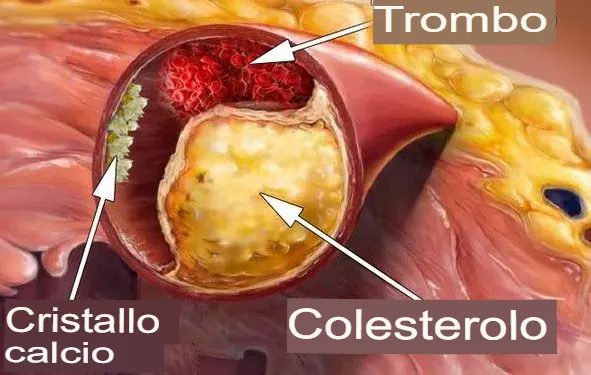
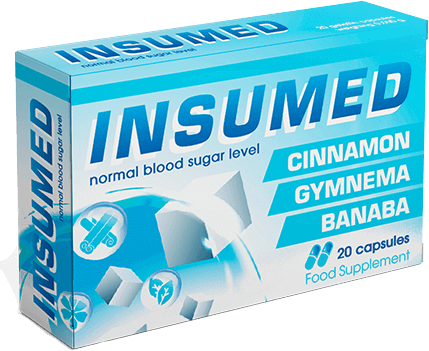

¡Puedes olvidarte de la diabetes para siempre! Un científico japonés de 105 años comparte el secreto de su victoria sobre esta enfermedad
Aretha Tanaka fue una famosa endocrinóloga japonesa, profesora, científica y ganadora del Premio Nobel, entre otros muchos galardones. Se jubiló a los 90 años, pero se mantuvo joven de cuerpo y mente. Pero a los 95 años, el Sr. Tanaka empezó a luchar contra la diabetes. Ahora tiene 105 años y en 3 años su nivel de azúcar en sangre nunca ha superado la norma. Además, el profesor afirma sentirse de 60 años.
El Sr. Tanaka afirma haber encontrado el secreto de la terapia de la diabetes y que ésta puede detenerse en cualquier fase. En estos momentos, el científico endocrinólogo está confirmando sus palabras con un nuevo método.
Nuestro corresponsal entrevistó a un longevo. El Sr. Tanaka explica detalladamente el método de corrección de la diabetes.
Sr. Tanaka, usted ha dicho muchas veces que la limpieza del páncreas es la piedra angular para librarse de la diabetes. ¿Es cierto?
Aretha Tanaka: Le diré lo siguiente: el funcionamiento de todos los órganos y sistemas internos depende de la calidad de la circulación sanguínea. Al fin y al cabo, la circulación sanguínea es el transporte de oxígeno y nutrientes, así como la introducción de dióxido de carbono y productos metabólicos en los órganos internos. En la infancia y la adolescencia nos movemos mucho, nuestros vasos están limpios, son flexibles y maximizan la nutrición de todos los órganos. Pero a medida que envejecemos, nos movemos cada vez menos y nuestras arterias empiezan a ensuciarse. Esto se debe a diversos factores que no sólo son perjudiciales (por ejemplo, el tabaquismo, la mala alimentación, la ecología, el sedentarismo), sino también bastante naturales (por ejemplo, la deposición de lípidos).

¿Por qué es importante prestar especial atención a los recipientes en primer lugar? Imagínese que las tuberías no se han limpiado durante mucho tiempo. ¿Qué ocurre como resultado? Se cubren con una gruesa capa de óxido, cal y otros depósitos insolubles, y el agua misma se vuelve desagradable e incluso peligrosa. Lo mismo ocurre con los órganos internos. Cuando el colesterol u otras sustancias se acumulan en los vasos sanguíneos, la sangre se ensucia y el riego sanguíneo deja de ser lo que debería. Como consecuencia, todos los órganos y sistemas sufren y dejan de funcionar como deberían. Lo mismo ocurre con el páncreas. Produce insulina, que descompone la glucosa en la sangre. Si los vasos sanguíneos están obstruidos, el páncreas no puede realizar su tarea y las células de insulina no funcionan correctamente.

Foto de la conferencia del Prof. Tanaka.
Si limpia sus vasos sanguíneos con regularidad, su páncreas estará sano y podrá vivir hasta 120 años sin saber lo que es la diabetes. Además, con unos vasos sanguíneos sanos, otros órganos no se verán afectados. En otras palabras, la vida y la salud pueden prolongarse considerablemente limpiando los vasos sanguíneos. Esto no es sólo una teoría. Mi jubilación coincidió con mi aprendizaje personal sobre esta enfermedad. Me diagnosticaron diabetes de tipo 2. Pero toda mi experiencia en endocrinología me ayudó a encontrar una solución.

Así se produce la contaminación gradual. Los puntos blancos son zonas problemáticas que impiden a las células interactuar con la insulina. Como resultado, queda demasiada glucosa en el organismo.
Sr. Tanaka ¿Qué síntomas se asocian a los niveles elevados de azúcar?
Aretha Tanaka: Afecta a todo el cuerpo. Pero, por supuesto, afecta sobre todo a los órganos y sistemas que tienen un sistema vascular bien desarrollado.
La diabetes provoca afecciones como:
- Rinopatía diabética. Los niveles elevados de azúcar en sangre dañan las paredes de los pequeños vasos sanguíneos de la retina, haciéndolos más delgados. Esto conduce a la ceguera total.
- Síndrome del pie diabético. En la mayoría de los casos es necesaria la amputación.
- Hipo recurrente. El estrechamiento de las arterias de las extremidades inferiores se denomina enfermedad arterial periférica o EAP. Esta afección se manifiesta inicialmente como congelación y hormigueo en las extremidades y suele provocar discapacidad.
- Desarrollo de trombosis y arteriopatía periférica. Con el tiempo, el daño y el adelgazamiento de las paredes vasculares conducen a la deposición de calcio, que causa aterosclerosis.
- Daños renales. Los daños en las paredes de los vasos sanguíneos causados por niveles elevados y persistentes de azúcar en sangre también afectan a los pequeños vasos sanguíneos (capilares) de los riñones.
Para comprender los peligros de la diabetes mellitus, me gustaría mostrarles algunas imágenes.
 Rinopatía diabética. Provoca ceguera
parcial o total.
Rinopatía diabética. Provoca ceguera
parcial o total.
 Síndrome del pie diabético. Se muestran
todas las fases. Este caso acabó con la amputación de un dedo del pie.
Síndrome del pie diabético. Se muestran
todas las fases. Este caso acabó con la amputación de un dedo del pie.
 Trombosis y cambios oclusivos en las
arterias periféricas de las extremidades inferiores.
Trombosis y cambios oclusivos en las
arterias periféricas de las extremidades inferiores.
Todo el cuerpo se ve afectado. ¿Sabía que América Latina ocupa el primer lugar en el mundo en incidencia de diabetes? Al mismo tiempo, los expertos saben muy bien que es necesario limpiar el páncreas, y así restablecer la descomposición de la glucosa. Pero por alguna razón no recurren a esta práctica. Tal vez simplemente no tienen la capacidad y por eso mueren 4 veces más personas por complicaciones de la diabetes que en otros países.
Creo que el problema es que a las personas con diabetes se les recetan fármacos que se llevan utilizando desde los años 80. Los métodos no cambian y los medicamentos no son eficaces. Los métodos no cambian y el paciente tiene que tomar pastillas ineficaces el resto de su vida. Y al mismo tiempo no se limpian los vasos sanguíneos de ninguna manera. En Japón es una práctica activa y desde hace más de medio siglo todas las personas mayores de 35 años cuidan sus vasos sanguíneos. Por qué no lo hacen en toda América Latina es una gran pregunta para mí.
Sr. Tanaka ¿Hay algún síntoma que permita saber si los órganos están infectados?
Aretha Tanaka: Sí, por supuesto.
Algunos de los principales síntomas son:
- Elevación persistente de los niveles de azúcar en sangre
- Migraña
- Deterioro de la memoria
- Fatiga crónica
- Insomnio
- Problemas íntimos
- Problemas de visión y audición
- Hipertensión
- Falta de aliento y angina de pecho
- Piel pálida en las piernas
- Dolores musculares y articulares
Lo cierto es que los órganos sufren y se deterioran debido a la contaminación vascular, sobre todo en las personas mayores. Y para ello no hace falta comerse una hamburguesa o unas patatas fritas. Basta con comerse una salchicha o un huevo para que empiece a acumularse colesterol en los vasos sanguíneos, que con el tiempo se irá acumulando cada vez más y contaminando los vasos.
Sr. Tanaka ¿Puede revelarnos el secreto de la terapia de la diabetes mellitus?
Aretha Tanaka: Hasta hace poco, limpiar el páncreas, los vasos sanguíneos y regular los niveles de insulina llevaba varios meses porque preparar un remedio especial requería mucho tiempo. Yo personalmente recolectaba hierbas. Las que faltaban las buscaba en el mercado o las encargaba en Internet, y luego preparaba una solución a partir de ellas. Pero ahora todo es más sencillo. Basándose en mi fórmula de cactus opuntia, Moringa, Neem y hojas de roble blanco, mis colegas han creado las cápsulas D-Norm para limpiar el páncreas y los vasos sanguíneos.
D-Norm es el único producto que permite normalizar el procesamiento de la glucosa en 2-3 semanas de uso regular. También me gustaría señalar que este producto no contiene elementos sintéticos, sino sólo extractos naturales altamente concentrados de plantas medicinales. Sigo dando consultas y recomiendo este producto a todo el mundo. Sólo que da un efecto potente y al mismo tiempo es inofensivo para el organismo
Este producto se utiliza en América Latina desde hace aproximadamente un año, por lo que el instituto local de investigación endocrinológica realizó un estudio global con unos 2000 pacientes. Todos ellos tomaron D-Norm y los especialistas obtuvieron resultados impresionantes.
Analizar los resultados de los estudios experimentales durante el 1er año de admisión:
- Normalización de los niveles de azúcar e insulina en sangre - en el 99% de los sujetos.
- Normalización de los procesos metabólicos y mejora de la función hepática - 97% de los sujetos.
- Limpieza vascular y pancreática completa - 99% de los sujetos.
IMPORTANTE LOS ESTUDIOS HAN DEMOSTRADO QUE EL MES EN CURSO ES EL MEJOR MOMENTO PARA INICIAR LA TERAPIA. LA ESTABILIZACIÓN DE LA TEMPERATURA MEDIA ACELERA LOS PROCESOS METABÓLICOS EN EL ORGANISMO Y POTENCIA EL EFECTO DEL PRODUCTO. EL TRATAMIENTO ES UN 37% MÁS RÁPIDO QUE EN OTRAS ÉPOCAS DEL AÑO.
Sr. Tanaka ¿Puede decirme cuánto cuesta este producto y dónde puedo comprarlo?
Mientras este programa esté en vigor, D-Norm se venderá con un 50% de descuento a todos los residentes latinoamericanos. Para participar en el programa y recibir D-Norm, debe solicitarlo rellenando el siguiente formulario antes de la .
AÑADIDO HACE 12 HORAS | NOTA DEL EDITOR: ¡Noticias importantes! El programa ahora es válido en todas las regiones de América Latina hasta el inclusive. Hasta que el programa termine, ¡cualquiera puede comprar el producto original de D-Norm con un 50% de descuento en el SITIO OFICIAL! Paquetes restantes en el marco del programa: 43 pcs.
Sr. Tanaka Gracias, Sr. Tanaka, por su invención y por una entrevista tan profunda.
Comentarios
Magdalena Godoy
Muchas gracias por el artículo. He aprendido todas las cosas para las que no encontraba respuestas desde hace mucho tiempo.
Gloria Flores
Hola, el artículo lo encontró mi hijo e inmediatamente compró este producto. Tengo diabetes desde hace poco, pero me siento muy mal. Tomé D-Norm como usted dijo - un mes y los resultados fueron muy impresionantes. Junto con la dieta mi azúcar se normalizó. Empecé a sentirme bien y mi dificultad para respirar ha desaparecido. Gracias de nuevo por decir a la gente normal cómo tratarse correctamente y con un presupuesto.
Juanfrancisco Plaza
La diabetes es una enfermedad muy grave. Tengo miedo de ella, ya que todos mis parientes después de 40 años de edad comienzan a enfermar((( Es muy scary....
 Natividad Parra
Natividad Parra
Llevo enferma más de 20 años. Somos de un pueblo pequeño, pero ya hemos ido a médicos de grandes centros médicos, ¡pero no hay nada! Cada mes me gasto un montón de dinero en pastillas que apoyan la salud, y el tratamiento en sí como no había y no. Gracias por la recomendación, también voy a pedir D-Norm sobre todo porque tiene un precio razonable y su composición es grande.
 Josémiguel Piñeiro
Josémiguel Piñeiro
Hace poco me han diagnosticado diabetes y no me imagino mi vida sin pastillas. Pero ahora me doy cuenta de que se puede estar sano y vivir mucho tiempo si se hace todo bien. Gracias por el consejo.
 Juanantonio López
Juanantonio López
Nunca he probado un remedio mejor contra la diabetes. Por fin dejé de sufrir las frecuentes ganas de ir al baño, desapareció la hinchazón, incluso empecé a adelgazar. Hubo una explosión de energía, pasó la sed eterna. Ahora recomiendo D-Norm a todo el mundo, pruébenlo y no se arrepentirán.
Rosa Cortés
Llevo mucho tiempo buscando algo parecido, gracias.
 Mario Contreras
Mario Contreras
Muchas gracias por la recomendación, sin duda compraré este producto para mis padres.
Rosa Cortés
La diabetes me impedía llevar una vida normal. Tenía calambres en las manos, los dedos entumecidos, los pies helados y la vista empezaba a fallarme. Me trataron durante mucho tiempo hasta que probé D-Norm. Me ayudó mucho. Ahora me siento mucho mejor y mi nivel de azúcar no sube por encima de 4,5.
Mario Contreras
Después de la terapia hormonal mi azúcar subió a 12. Durante más de un año no pude normalizarlo, bajando mínimamente a 8. Una amiga me recomendó D-Norm y realmente me ayudó. Así que estoy completamente de acuerdo con el artículo y también recomiendo este remedio.
Ángela Piñeiro
Muchas gracias por su trabajo, estaba buscando un remedio así. Ya he pedido uno para mí y para mi marido.
 Ángel González
Ángel González
Gracias a este remedio por fin llevo una vida normal, ¡gracias!
Patricia Bustamante
Yo también tomé este remedio y al principio tenía miedo de dejar de tomarlo y que me volviera a subir la glucosa. Pero han pasado dos meses y todo va bien.
Mario Contreras
La composición natural del producto era muy importante para mí, ya que soy alérgica a muchos medicamentos. Es un remedio maravilloso. Y lo principal es que es seguro. Me ha funcionado perfectamente. El azúcar ha bajado a la normalidad, aunque antes era el doble.
Carmelo Henríquez
Gracias por el descuento, pedí varios paquetes a la vez. Fue un gran negocio.
 Ramona Revuelta
Ramona Revuelta
Tomaba regularmente pastillas para el azúcar, pero en un momento dado empecé a tener problemas renales y tuve que suspenderlas casi todas. Tuve suerte de tener un buen especialista. Me recetó D-Norm Mi nivel de azúcar se normalizó al cabo de un mes y sigue sin subir, aunque ya no tomo nada.
 Veronica Villalba
Veronica Villalba
La diabetes mellitus es una de las enfermedades más graves. Mueren más personas por su causa que por el SIDA, la gripe y los infartos de miocardio. Además, la diabetes provoca muchas enfermedades relacionadas, ya que afecta a casi todos los órganos. Personalmente, mi abuela se quedó completamente ciega a causa de la diabetes...
Carmen Rivero
Yo también tengo diabetes desde hace más de 20 años. Sí, los médicos tienen razón. Dieta y pastillas, entonces puedes sentirte normal, porque la diabetes realmente es para toda la vida. Pero para mí personalmente, la dieta es peor que la tortura medieval. Y las pastillas en grandes cantidades para beber no es lo mío. Elegí D-Norm. Y mi médico está de acuerdo conmigo. En primer lugar, no es necesario tomarlo todos los días durante toda la vida, sino en un curso. En segundo lugar, normaliza el azúcar durante mucho tiempo. Y en tercer lugar, es natural. Y lo más importante para mí es que se puede romper la dieta con él.
Veronica Villalba
El mejor médico del mundo. Sacó a mi madre y ahora a mí.
¡¡¡¡No puedo confiar en nadie más que en él!!!! Nunca cambiaré a este maravilloso médico por ningún otro.
Carmen Rivero
Tengo diabetes desde hace mucho tiempo y no bajaba de 10 desde hace varios años. Compré este producto y por segundo mes mi azúcar es de 5,5, ¡muchas gracias por hablarme de este producto!
 María Rosa Río
María Rosa Río
Tengo diabetes y los médicos me recetan pastillas y me dicen que siga una dieta, que así vivirá mucho tiempo. Pero, ¿eso es vivir? Para mí, hacer dieta es peor que una tortura medieval. Y no puedo tomar pastillas en grandes cantidades, me duele el estómago. Hace poco me enteré de la existencia de D-Norm y decidí preguntárselo a mi médico. Me dijo que es un medicamento estupendo. En primer lugar, no es necesario beber todos los días durante toda la vida, pero sólo hace recepciones de curso. En segundo lugar, normaliza el azúcar durante mucho tiempo. Y en tercer lugar, es natural. Y lo más importante para mí - con él se puede romper la dieta. Empecé a tomarlo y realmente pasó de inmediato la hinchazón, se fue el exceso de líquido del cuerpo y el azúcar normalizado. ¡Es un milagro! Hoy he comido un pollo muy frito y un pastel muy dulce y por primera vez todo es normal. Estoy contenta.

 Silvia García
Silvia García
Me han diagnosticado diabetes... ¿cómo sigo con mi vida? ????
Estefania Cordero
Pruebe D-Norm, ha ayudado a toda nuestra familia.
 Natividad Rojo
Natividad Rojo
Mi padre perdió las piernas por la diabetes... No te metas con esta enfermedad, es muy insidiosa.
Carmen Rivero
Tengo diabetes desde hace más de 15 años. Sigo una dieta y por alguna razón siempre tengo malestar estomacal a causa de ella. ¡Tomo muchas pastillas, pero parece que no ayudan, porque un poco lejos de la dieta y el azúcar se convierte en casi 2 veces mayor! Vi su artículo y decidí pedir este remedio y es simplemente un milagro. Empecé a tomar D-Norm y mi azúcar empezó a bajar a la normalidad. E incluso si no sigo la dieta, mi azúcar no supera 6,4. Esto es muy bueno para mí, ¡porque en algunos momentos mi azúcar superaba los 20! Gracias.
 Cristina Salazar
Cristina Salazar
¿Se puede utilizar este remedio para prevenir la diabetes mellitus? Tengo predisposición y mis padres murieron de diabetes mellitus.....
 Joséfrancisco Luna
Joséfrancisco Luna
Sólo tienes que tomar este remedio ya que tienes una predisposición genética. Controla tus niveles de azúcar y toma medidas preventivas 1-2 veces al año para mantenerte sano.
 Luz Bustamante
Luz Bustamante
Vivo con diabetes de tipo 2 desde hace más de 15 años. Al principio de la enfermedad mi vida era un infierno. Era difícil seguir una dieta. En cuanto te relajas un poco, ¡el azúcar sube el doble! Las pastillas y las vitaminas son mis eternas compañeras. Pero el problema es que mis medicamentos para la diabetes afectaban gravemente a mi hígado y mis riñones. Había que dejar de tomar algo. Estaba empeorando hasta que mi médico fue a una conferencia y se enteró de la existencia de D-Norm. Tomé un curso y mi azúcar fue normal durante seis meses. Llevo tres años tomando D-Norm dos veces al año y me siento muy bien. Es mucho mejor y más barato que tomar pastillas todos los días. Además, es cierto que no hay que seguir una dieta estricta y lo más importante es que tiene una composición natural, que no da complicaciones a otros órganos.
Natividad Medina
¿Puede decirme dónde compró este producto? Las farmacias privadas no lo venden y me da miedo comprarlo por Internet. Tengo miedo de encontrarme con una falsificación....
Carmen Rivero
D-Norm SÓLO puede pedirse a través del formulario de pedido oficial:
¡sólo tiene que
hacer clic en el enlace anterior! Aún está a tiempo de pedir este producto en el marco del
programa a un precio especial.
Gracias por compartir sus conocimientos. He pedido este producto.